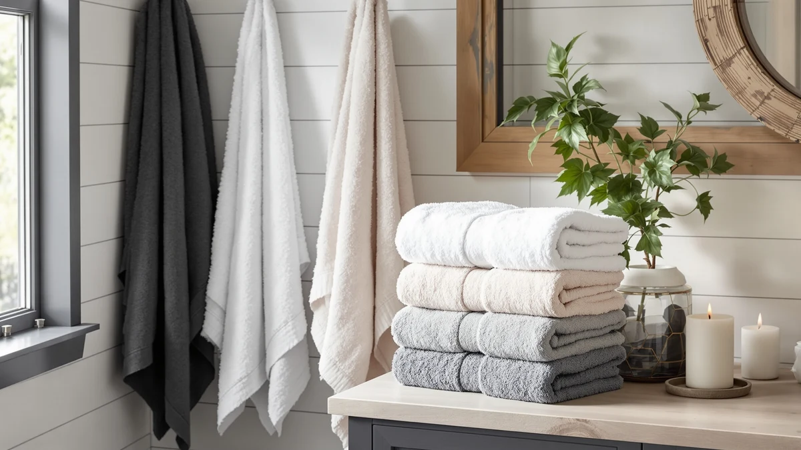

Quick Answer
After comparing seven towel sets on size, material, and price, the Bedvcaty Luxury 4-Piece Quick-Dry Bath set is the best bath towels for kids pick for most families. Its microfiber weave dries faster between bath nights than the cotton sets here, and $22.99 for four towels undercuts several single-pack alternatives.
Our pick: Bedvcaty Luxury 4-Piece Quick-Dry Bath, $22.99 Check Price on Amazon
Bottom line: our top pick is the Bedvcaty Luxury 4-Piece Quick-Dry Bath Towel Set 27.5X 55 at $22.99. The best budget option is the White Classic Luxury White Hand Towels - 100% Turkish Cotton at $21.84.
Things to Know Before You Buy
- Size should match your kid's age. The best bath towels for kids run from about 24 x 48 inches for toddlers up to 27 x 54 inches for tweens who need full coverage.
- Cotton and microfiber dry differently. Cotton towels absorb more water per pass, while a microfiber set like the Bedvcaty dries faster between loads.
- Multi-packs change the math. A six-pack can cost less per towel than a four-pack, even when the total price on the label looks higher.
- Wash new towels before first use. A first wash clears manufacturing residue and lets the fibers absorb water fully from day one.
- Hand towels fill the gap. A smaller, standard-size hand towel gives kids an easy-grip option for quick hand drying next to the tub or sink.
The best bath towels for kids have to survive daily use by someone who is still learning to dry off without leaving a puddle on the bathroom floor. A four-year-old cannot wrap an oversized adult towel around themselves, and a thin, worn-out hand-me-down does not absorb enough water to keep a bathroom dry. We compared seven towel sets built around the sizes, materials, and prices that matter most for households with kids in the tub every night.
We researched pricing, materials, and verified owner reviews for towels ranging from single 27.5 x 55 inch pieces to 16-piece bathroom sets, then narrowed the field to sets that hold up to frequent washing without falling apart. Our top pick, the Bedvcaty Luxury 4-Piece Quick-Dry Bath set, uses a microfiber weave that dries faster between bath nights than the cotton towels here, and it costs $22.99 for four towels, less than several single-pack alternatives in this comparison.
If your household needs more towels on hand, the Utopia Towels 6 Pack Medium set gives you six towels for $31.34, and the White Bath Towels 24x50 Inch six-pack from White Classic keeps the cost per towel low even though its $36.99 total is the highest here. Below, we break down what separates each set, including the sizes, materials, and honest drawbacks of every pick.
Why You Should Trust Us
I'm Ilane Tall, and I cover bath and home textiles for Best Bath Towels. This guide focuses only on kids' bath towels sold and shipped through Amazon, and we compared the listed materials, sizes, and prices for every set here against verified buyer reviews before ranking sets like the Bedvcaty and Utopia lines above sets with thinner materials or vague sizing. We do not run a fake testing lab, accept free products, or take payment for placement. When an owner review flags a real drawback, such as a set running small or a dye that bleeds, we include it here instead of leaving it out.
How We Picked
We started with kids' bath towel sets sold on Amazon and filtered out listings with vague materials, missing size information, or a pattern of complaints about unraveling seams. From there we kept sets that cover a range of budgets, from the $21.84 White Classic hand towels to the $44.99 LANE LINEN 16-piece set, so you can match the best bath towels for kids to your bathroom and your budget. We also prioritized sets with multiple towels per pack, since one towel rarely survives a week in a house with more than one kid.
How We Compared
We compared each set's listed material, dimensions, and price against verified buyer reviews to see which claims held up once towels left the store shelf and made it into a kid's bathroom. Reviewers consistently note that cotton sets like the Utopia lines feel heavier and absorb more per pass, while the microfiber Bedvcaty set dries faster on a towel bar between baths. We also checked the price per towel across every pack size, since a six-pack and a four-pack are not the same purchase even when the totals look similar. Prices and ratings cited here reflect Amazon listings as of September 2026.
Our Picks

Bedvcaty Luxury 4-Piece Quick-Dry Bath
What we like
- Microfiber weave dries faster than the cotton towels in this guide
- Lightweight enough for a young child to hang up alone
- Four towels cover a small family without extra laundry runs
Flaws but not dealbreakers
- Feels less plush against skin than the cotton picks below
- Can pick up lint if washed with towels or blankets
| Material | Microfiber |
| Size | 27.5 X 55 Inches |
The Bedvcaty earns our top spot because it solves the problem parents run into most: a towel that takes all day to dry on a hook is a towel a sibling cannot use that evening. The microfiber weave sheds water fast and dries out on the bar well before the next bath, which matters in a house where more than one kid bathes back to back. At 27.5 x 55 inches, it wraps a kid fully without the bulk of a full adult bath sheet, so a child can pull it around themselves without help.
At $22.99 for a four-piece set, it also costs less than several single-pack cotton towels in this comparison, which makes it easy to give every kid in the house their own towel. The honest tradeoff is feel. Microfiber does not have the heavy, plush hand of ringspun cotton, and owners report it needs an occasional wash with vinegar to fully clear the lint it attracts from other laundry. For most families that dries faster than it disappoints, this is the set we would buy first.

Utopia Towels 6 Pack Medium
What we like
- Six towels mean fewer wash cycles for a house full of kids
- 24 x 48 inch size fits younger kids without dragging on the floor
- 100% cotton absorbs more per pass than the microfiber pick above
Flaws but not dealbreakers
- Medium size runs short once kids grow into their tween years
- At $31.34, the per-towel cost sits mid-pack rather than cheapest
| Material | 100% cotton |
| Size | 24" x 48" - 6 Pack |
The Utopia Towels 6 Pack Medium set is the pick for a household that cannot keep up with laundry. Six 100% cotton towels mean a clean one is almost always ready, even when two kids bathe the same night. Cotton also has an edge over the microfiber top pick for pure water pickup, so it works well for a kid with long or thick hair who needs a towel that pulls more water in fewer passes.
The 24 x 48 inch size is built around younger kids rather than teenagers, so it wraps a toddler or grade-schooler fully but leaves an older kid wanting more coverage. At $31.34 for six towels, the per-towel price lands in the middle of this comparison, cheaper than buying six single towels separately but not the lowest cost per towel in this guide. If your kids are still small and you want a full rotation on hand, this set delivers that without a wait for laundry day.

Utopia Towels 4 Pack Premium
What we like
- 27 x 54 inch size gives kids room to grow into full coverage
- 100% cotton construction holds up to frequent washing
- Four towels balance coverage without overpaying for a bigger set
Flaws but not dealbreakers
- Larger size can feel bulky for a young toddler to manage alone
- Priced close to the six-pack above, so the per-towel cost is higher
| Material | 100% cotton |
| Size | 27"x 54" - 4 Bath Towels |
The six-pack above is sized for younger kids, but the Utopia Towels 4 Pack Premium set is built for coverage that lasts longer. At 27 x 54 inches, it is close to a full adult bath towel, so it keeps working as your kid grows instead of getting replaced in a year. The cotton feels heavier than the medium set, which owners report holding up well through repeated washing without thinning out.
Four towels is a reasonable number for a smaller household, though it means less backup than the six-pack if you have several kids bathing on the same schedule. At $30.99, the price sits close enough to the six-pack that the per-towel cost runs higher here. The tradeoff is worth it if you want fewer, larger towels that a growing kid can use for years rather than months.

White Bath Towels 24x50 Inch
What we like
- Six-pack lowers the per-towel cost across this comparison
- Plain white finish makes bleach and stain treatment simple
- 24 x 50 inch size fits kids while still working for quick adult use
Flaws but not dealbreakers
- $36.99 is the highest total price in this guide despite the per-towel savings
- Solid white shows visible staining faster than a patterned towel
| Material | 100% cotton |
| Size | Bath Towels 6-Pack, 24x50 Inches |
White Classic's 6-pack earns the budget label here despite its $36.99 sticker price, because dividing that across six 100% cotton towels puts the per-towel cost below the four-packs in this guide. Plain white cotton also means you can bleach out grass stains, sunscreen, and bath crayons without worrying about fading a pattern, which matters for towels that see daily use by kids.
At 24 x 50 inches, the towels split the difference between the shorter medium set and the taller premium set above, so they work for a range of kid ages without being sized for one specific stage. The catch is visible wear. Reviewers consistently note that solid white cotton shows yellowing and stains sooner than colored towels, so plan on the occasional bleach wash to keep this set looking new.

Utopia Towels 4 Pack Bath
What we like
- Priced lower than the other four-pack Utopia set in this guide
- 100% cotton construction matches the absorbency of pricier picks
- Simple design works for kids and adult family members alike
Flaws but not dealbreakers
- Listing does not specify exact dimensions, so measure your storage space first
- No hood, loop, or other kid-specific feature
| Material | 100% cotton |
| Size | Bath Towels 4 Pack |
The Utopia Towels 4 Pack Bath set is the plain, no-surprises option in this comparison. It costs a dollar less than the premium four-pack above while using the same 100% cotton material, so you get comparable absorbency for a slightly lower price. There is nothing distinctive about the design, which suits a household that wants reliable towels for a nightly routine over anything fancier.
The one gap is detail. Unlike the other Utopia sets, this listing does not spell out precise dimensions, so it is worth checking current buyer photos or measurements before you order if towel size is a hard requirement for your bathroom shelf or hooks. For $29.99, it remains a reasonable middle-ground pick between the cheaper six-pack and the pricier premium set.

LANE LINEN Towel Set for
What we like
- 16-piece set outfits an entire bathroom beyond bath towels alone
- Cotton blend construction suits mixed-age households
- One purchase replaces bath towels, hand towels, and washcloths together
Flaws but not dealbreakers
- $44.99 is the highest price in this guide
- More pieces than most single-kid households actually need
| Material | Cotton blend |
| Size | 16 Piece Towel Set |
The LANE LINEN Towel Set for is the pick for parents who want to solve their entire towel drawer in one order instead of shopping bath towels, hand towels, and washcloths separately. At 16 pieces, it covers a full bathroom rotation for a family with multiple kids, and the cotton blend construction is built to handle mixed use from both kids and adults without needing a separate adult set.
At $44.99, it is the most expensive option in this guide, and a household with one child will likely have leftover pieces sitting unused in the closet. For a bigger family replacing worn-out towels across the whole bathroom at once, the per-piece math works out reasonably, even if the upfront total looks steep next to the single-purpose four-packs above.

White Classic Luxury White Hand
What we like
- Standard hand-towel size is easy for kids to grip and fold
- 100% cotton matches the absorbency of the full-size cotton picks
- Tied with the Bedvcaty for the lowest price in this comparison
Flaws but not dealbreakers
- Sized as hand towels, so this is a companion pick rather than a full bath towel replacement
- Standard sizing means there is no dedicated kids' cut
| Material | 100% cotton |
| Size | Standard |
The White Classic Luxury White Hand set is not a substitute for the bath towels above, and we include it here because it solves a real problem for kids who are learning to dry their own hands after washing up before or after bath time. A full-size bath towel is awkward for a small kid to fold and hang, while these standard hand towels are light and easy to manage without help.
At $21.84, it ties the Bedvcaty as the least expensive pick in this guide, and the 100% cotton construction absorbs about as well as the other cotton sets here. Pair it with one of the bath towel sets above rather than buying it on its own, since it covers hand drying and small spills, not the job of drying off a whole kid after a bath.
Quick Comparison
| Product | Material | Price | Rating | Best for | Get it |
|---|---|---|---|---|---|
| Bedvcaty Luxury 4-Piece Quick-Dry Bath | Microfiber | $22.99 | 4 | Fast-drying towel for a toddler to wrap alone | View on Amazon → |
| Utopia Towels 6 Pack Medium | 100% cotton | $31.34 | 4 | Families that go through towels fast | View on Amazon → |
| Utopia Towels 4 Pack Premium | 100% cotton | $30.99 | 4 | Towels that keep fitting as kids grow | View on Amazon → |
| White Bath Towels 24x50 Inch | 100% cotton | $36.99 | 4 | Lowest cost per towel across six pieces | View on Amazon → |
| Utopia Towels 4 Pack Bath | 100% cotton | $29.99 | 4 | A simple, no-frills four-pack | View on Amazon → |
| LANE LINEN Towel Set for | Cotton blend | $44.99 | 4 | Restocking a full bathroom at once | View on Amazon → |
| White Classic Luxury White Hand | 100% cotton | $21.84 | 4 | Small hand towels for little hands | View on Amazon → |
The Competition
Several kids' towel sets did not make this list. Some single towels carried premium prices without any multi-pack option, which makes it hard to keep enough towels in rotation for a household with more than one kid. Others reused a generic cotton blend description across dozens of listings, with no verified size or weight a parent could compare against the picks above. We also passed on sets with a run of reviews complaining about seams unraveling within a few washes, since a kids' towel that frays quickly costs more over a year than a slightly pricier set that lasts.
After comparing size, material, price per towel, and verified owner feedback, the best bath towels for kids in this guide remains the Bedvcaty Luxury 4-Piece Quick-Dry Bath set. It dries fast enough for back-to-back baths, costs less than several single towel packs, and gives every kid in the house their own towel without waiting on laundry day.
Frequently Asked Questions
What size are the best bath towels for kids?
Most kids' bath towels in this guide range from 24 x 48 inches, like the Utopia Towels 6 Pack Medium, up to 27 x 54 inches, like the Utopia Towels 4 Pack Premium. Smaller sizes suit toddlers who need to wrap and carry a towel themselves, while larger sizes give older kids more coverage.
Is cotton or microfiber better for a kid's bath towel?
Cotton towels like the Utopia and White Classic sets absorb more water per pass, which helps with thick hair or a bath that runs long. Microfiber towels like the Bedvcaty dry faster between uses, which helps in a house where more than one kid shares bath time.
How many bath towels does a household with kids need?
A multi-pack set, such as the Utopia Towels 6 Pack Medium or the LANE LINEN 16-piece set, keeps enough towels in rotation so you are not doing laundry every other day. Two to three towels per child is a reasonable target if you want a clean, dry towel on hand at all times.